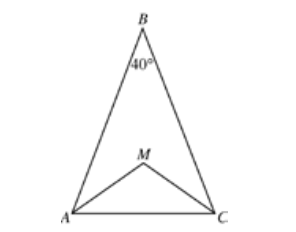

1. When 70,000 is written as 7.0 x 10 n what is the
value of n ?
- (A) 1
- (B) 2
- (C) 3
- (D) 4
- (E) 5
2. On a car trip Sam drove m miles, Kara drove twice as
many miles as Sam, and Darin drove 20 fewer miles
than Kara. In terms of m, how many miles did Darin
drive?
- (A)
- (B)
- (C)
- (D) (m+20)+ 2
- (E) (m/2)+ 20
If x and y are positive integers, what are all the solutions (x, y) of the equation 3x + 2y = 11?
- (A) (1,4) only
- (B) (3,1) only
- (C) (1,4) and (2,2)
- (D) (1,4) and (3,1)
- (E) (2,2) and (3,1)
4. A company’s profit, P, in dollars, for producing x machines in one day is given by
If the company produces 10 machines in one day, then, according to this formula, what is the profit for that day?
- (A) $5,000
- (B) $4,000
- (C) $3,000
- (D) $2,000
- (E) $1,000
12 - n, 12, 12 + n
5. What is the average(arithmeticmean) of the 3 quantities in the list above?
- (A) 4
- (B) 12
- ((C) 18
- (D)
- (E)

6. In isosceles triangle ABC above,
and
are the angle bisectors of angle BAC and angle BCA. What is the measure of angle AMC ?
- (A)
- (B)
- (C)
- (D)
- (E)
7. A fruit salad is made from pineapples, pears, and peaches mixed in the ratio of 2 to 3 to 5, respectively, by weight. What fraction of the mixture by weight is pineapple?
- (A)
- (B)
- (C)
- (D)
- (E)
 8. In the figure above, square RSTU is inscribed in the circle. What is the degree measure of arc ST ?
8. In the figure above, square RSTU is inscribed in the circle. What is the degree measure of arc ST ?
- (A)
- (B)
- (C)
- (D)
- (E)
9. If P and Q are two sets of numbers, and if every number in P is also in Q, which of the following CANNOT be true?
- (A) 4 is in both P and Q.
- (B) 5 is in neither P nor Q.
- (C) 6 is in P, but not in Q.
- (D) 7 is in Q, but not in P.
- (E) If 8 is not in Q, then 8 is not in P.
10. What is the maximum number of rectangular blocks measuring 3 inches by 2 inches by 1 inch that can be packed into a cube-shaped box whose interior measures 6 inches on an edge?
- (A) 24
- (B) 28
- (C) 30
- (D) 36
- (E) 40
11. If
and
what is the value of
?
- (A) -5
- (B) -1
- (C) 1
- (D) 2
- (E) 5